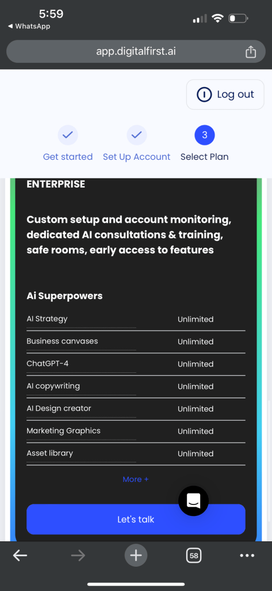
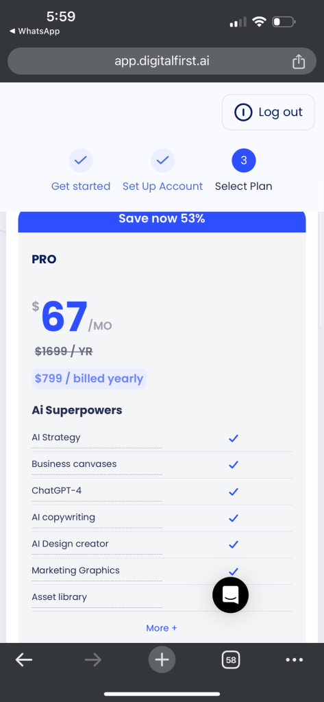
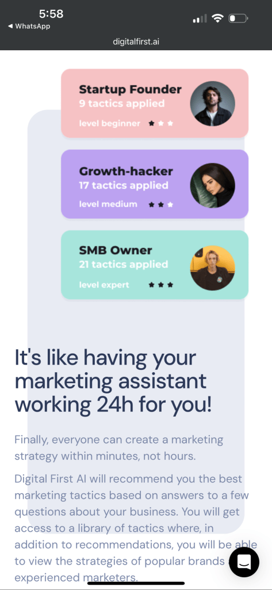
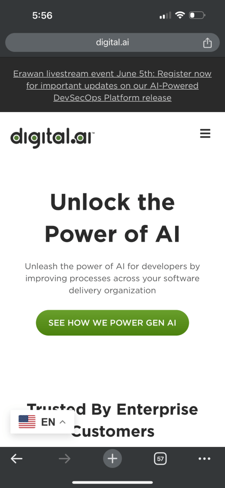

Leveraging Digital.ai for Enhanced Viral Marketing
Todo
In the dynamic landscape of digital marketing, staying ahead of the curve requires more than just creative campaigns; it demands strategic implementation and precise execution. Enter Digital.ai, a powerful tool designed to revolutionize the way businesses approach viral marketing. This blog post delves into the capabilities of Digital.ai and how it can significantly enhance your viral marketing efforts.
What is Digital.ai?
Digital.ai is a comprehensive platform that integrates various aspects of digital transformation, from application development to operational efficiency. It leverages AI and machine learning to provide actionable insights, automate workflows, and optimize processes across the board. For marketers, Digital.ai offers a suite of tools that can be harnessed to boost the reach and impact of viral campaigns.
Key Features of Digital.ai for Viral Marketing
-
Advanced Analytics: Digital.ai's analytics tools allow marketers to track and analyze data in real-time. This capability is crucial for understanding the performance of your campaigns and making data-driven decisions to enhance their effectiveness.
-
AI-Powered Insights: The platform uses artificial intelligence to predict trends and consumer behavior. These insights can be invaluable for crafting content that resonates with your target audience and increases the likelihood of it going viral.
-
Automation: Digital.ai automates repetitive tasks, freeing up your team's time to focus on more strategic aspects of the campaign. Automation can also ensure consistent execution across different channels, maintaining the momentum of your viral marketing efforts.
-
Collaboration Tools: Effective viral marketing often involves multiple stakeholders. Digital.ai provides collaboration tools that make it easier for teams to work together seamlessly, from planning and execution to monitoring and optimizing campaigns.
-
Integration Capabilities: The platform can integrate with various other marketing tools and platforms, providing a unified view of your marketing activities. This integration is crucial for maintaining coherence and maximizing the impact of your campaigns.
How Digital.ai Enhances Viral Marketing
-
Targeted Content Creation: With AI-powered insights, Digital.ai helps you understand what type of content is likely to resonate with your audience. By creating highly targeted content, you increase the chances of it being shared widely, a key component of viral marketing.
-
Optimized Timing and Distribution: Knowing when and where to publish your content is just as important as the content itself. Digital.ai analyzes user behavior and engagement patterns to recommend optimal times and channels for distribution, ensuring your content reaches the maximum audience.
-
Real-Time Monitoring and Adaptation: Viral marketing requires agility. Digital.ai's real-time analytics allow you to monitor the performance of your campaign as it unfolds. This capability means you can quickly adapt your strategy based on what’s working and what’s not, keeping the campaign on track.
-
Enhanced Engagement: By automating responses and interactions, Digital.ai ensures that your audience feels engaged and valued. Prompt engagement can encourage more shares and interactions, fueling the viral spread of your content.
-
Scalable Solutions: Whether you are a small business or a large enterprise, Digital.ai offers scalable solutions that can grow with your needs. This scalability is vital for maintaining the momentum of a viral campaign, especially as it gains traction.
Case Study: Success with Digital.ai
Consider the example of a mid-sized e-commerce company that used Digital.ai to launch a viral marketing campaign for a new product line. By leveraging AI insights, they identified the most engaging content themes and optimal posting times. Automation tools handled the distribution across multiple social media platforms, while real-time analytics allowed the team to tweak the campaign on the fly. The result? A significant increase in shares, likes, and ultimately, sales, demonstrating the power of Digital.ai in driving viral marketing success.
Conclusion
In the competitive world of digital marketing, the ability to launch and sustain viral campaigns can set you apart from the competition. Digital.ai provides the tools and insights necessary to not only create compelling content but also to distribute, monitor, and optimize it for maximum impact. By integrating Digital.ai into your marketing strategy, you can harness the power of AI and automation to elevate your viral marketing efforts and achieve unprecedented reach and engagement.
Embrace Digital.ai and watch your marketing campaigns go viral with precision and ease.




Similar tools to devops.engineering
Imported from rifaterdemsahin.com · 2024